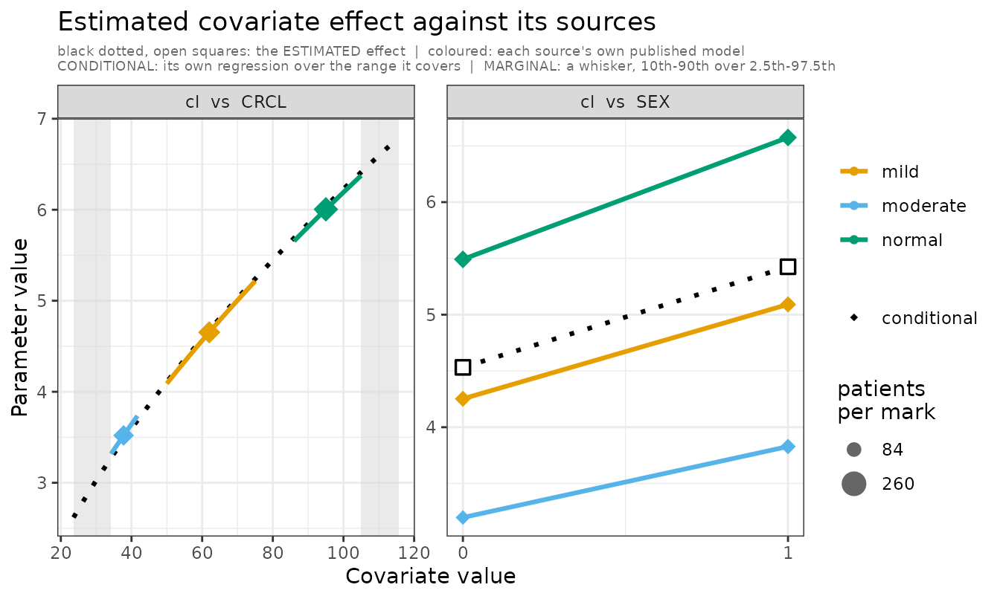
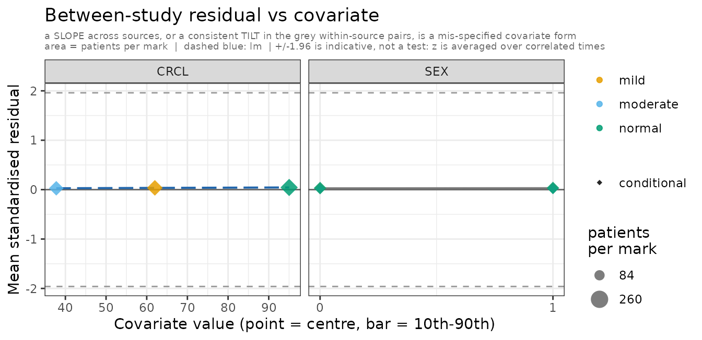
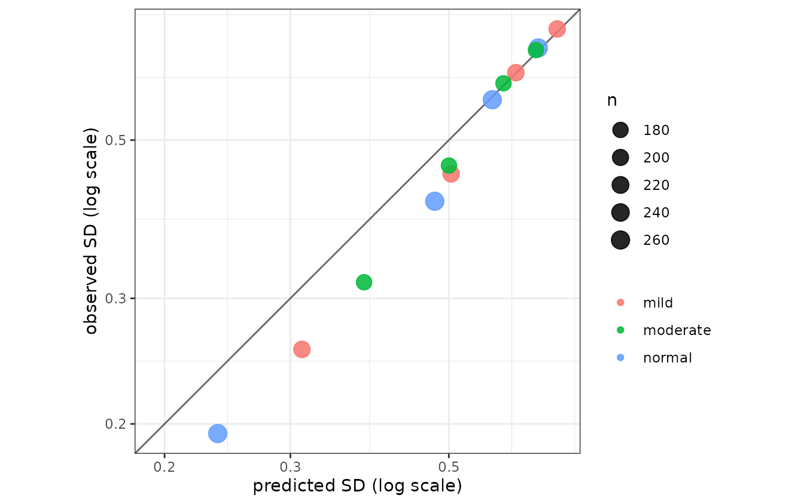
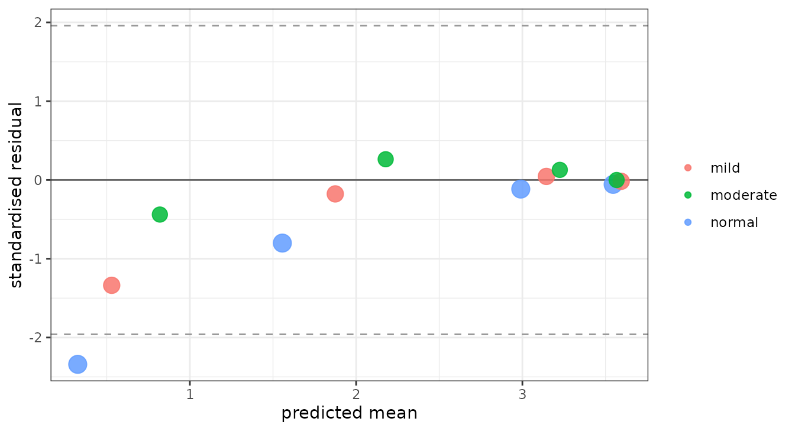
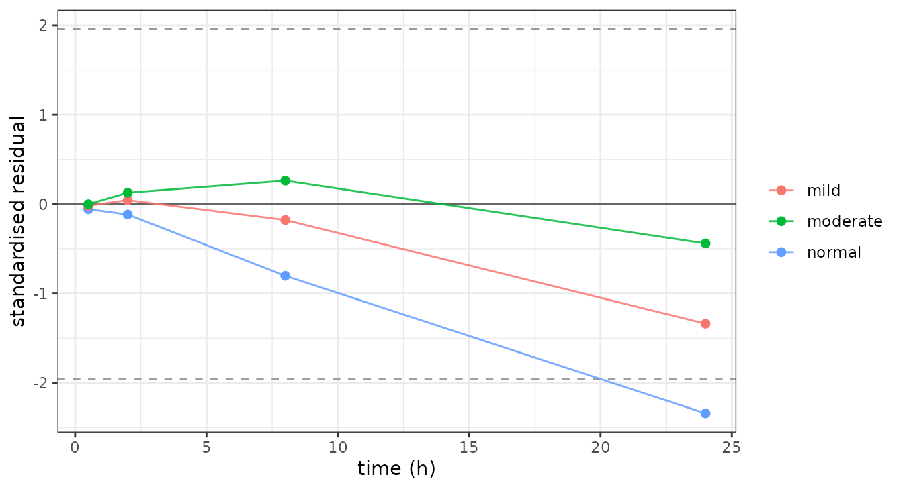

plot.admFit() draws up to five panel types, all five by
default. Each is returned as a named ggplot2 object in a list.
"covariate" needs studies that declare covariates and is
silently absent otherwise, so the single-study examplomycin fit used
below produces the other four. It has its own section, with its own fit,
further down.
Mean diagnostics
sqrt(diag(V)) is the total SD of one observation
across subjects, not between-subject variability — it carries
BSV, residual error, and, wherever a study marginalises a covariate, the
spread that covariate induces. The panels name the terms from the fit
rather than assuming them, and the predicted ribbon draws the
pre-sigma part inside the total, so the gap between the
two bands is the residual error. A predicted spread that misses the
observed one then tells you whether to look at omega and the covariates
or at the error model.
A 2×2 grid per source. A source is cut into one
study per covariate level or quadrature node, for every covariate its
own model fitted — a covariate a study marginalises over is not
identified against a random effect on the same parameter, so the
objective has to sum over the strata. But A_s1 is an index
into that expansion, and this panel asks “does the fit reproduce this
paper”, so the strata are put back together first.
The mean is the n-weighted mean of the strata. The variance is not: it is the law of total variance, within plus between, and the between term is the covariate effect the conditioning created. Averaging the strata’s variances would report the within-level spread, which is not what the paper published — a correctly specified fit would draw as under-predicting it.
The covariate panels keep the strata, because there the between-level
contrast is the entire signal. patchwork composes it;
without it you get four separate plots.
plots <- plot(fit, which = "mean")
Mean diagnostics for the examplomycin study.
Top-left — Observed: sample mean with ±1 SD ribbon, where SD = √diag(V_obs).
Top-right — Predicted: predicted mean with ±1 SD ribbon, where SD = √diag(V_pred), combining between-subject variability (Omega) and residual error (sigma). Both top panels share a y-axis, so a difference in magnitude is visible at once.
Bottom-left — Raw residual:
E_obs[t] − μ_pred[t] as a lollipop. The grey band is ±2
SE(mean), SE = √(V_pred[t,t] / n); points outside it
are systematic bias at that time.
Bottom-right — Standardised residual:
z[t] = residual[t] / SE[t], which a well-specified model
leaves approximately N(0, 1). Stars flag |z| > 1.96 (∗), 2.58 (∗∗),
3.29 (∗∗∗). Across 9 uncorrected time points, one flag is expected by
chance.
Covariance diagnostics
Observed against predicted (co)variance, as heatmaps. Also composed
with patchwork.
plots <- plot(fit, which = "cov")
Covariance diagnostics: observed and predicted covariance matrices with residuals.
Top row — Observed | Predicted: one shared blue-white-red scale. A good fit matches in magnitude and sign, off-diagonal temporal structure included.
Bottom-left — Residual (V_obs − V_pred): diverging purple-white-teal. Positive on the diagonal means the model under-predicts variance; negative, over-predicts.
Bottom-right — Standardised residual: each entry over its asymptotic SE — √(2 V[i,i]² / (n−1)) on the diagonal, √((V[i,i]·V[j,j] + V[i,j]²) / (n−1)) off it. Stars as above.
Covariate diagnostics
The mean and covariance panels are per study, in isolation. With
aggregate data a covariate effect is identified between studies
— the renal exponent in vignette("covariates") comes from
three cohorts sitting at three different creatinine-clearance medians,
none of which fitted a renal term — so every source can sit beautifully
on its own panel while the relation tying them together is wrong.
which = "covariate" draws that contrast, and returns two
plots.
The examplomycin fit declares no covariates, so these two panels need
a fit that does. Three renal cohorts, generated with a renal
effect. Two of them report only who they enrolled, so creatinine
clearance is marginal for them; mild
reports its result by renal subgroup, so it is
conditional. One figure then carries both readings of
the same covariate.
set.seed(11)
renal_model <- function() {
ini({
tcl <- log(5) ; tv <- log(50)
bcrcl <- 0.6 ; bsex <- 0.18
add.err <- 0.08
eta.cl ~ 0.05
})
model({
cl <- exp(tcl + eta.cl) * (WT / 70)^0.75 * (CRCL / 90)^bcrcl *
exp(bsex * SEX)
v <- exp(tv) * (WT / 70)
cp <- linCmt()
cp ~ add(add.err)
})
}
TIMES <- c(0.5, 2, 8, 24)
# MARGINAL on renal function: the paper reports the population it enrolled and
# admixr2 integrates over it. Conditional on sex, which every analyst fitted.
enrolled <- function(n, crclm) data.frame(
WT = rlnorm(n, log(76), 0.198),
CRCL = rlnorm(n, log(crclm), 0.05),
SEX = rbinom(n, 1, 0.5))
marginal_source <- function(n, crclm) admStudy(
model = renal_model, population = enrolled(n, crclm),
dose = 200, times = TIMES)
# CONDITIONAL on renal function -- and the call says nothing about that either.
# `renal_model` uses CRCL, so CRCL is conditional for any source built on it and
# is conditional. What IS worth declaring is `range`: the population here is a
# `mean +/- SD` transcription rather than the patients themselves, so its tails
# reach where nobody was enrolled, and `strata_nodes` keeps the node count to
# the one renal subgroup this paper reported.
conditional_source <- function(crclm, rng) admStudy(
model = renal_model,
population = covDist(WT = c(meanlog = log(76), sdlog = 0.198),
CRCL = c(meanlog = log(crclm), sdlog = 0.05),
SEX = c(female = 0.5, male = 0.5)),
n = 210L, dose = 200, times = TIMES,
strata_nodes = 1L, range = list(CRCL = rng))
renal_studies <- admStudies(
normal = marginal_source(260L, 95),
mild = conditional_source(62, c(50, 75)),
moderate = marginal_source(180L, 38))
renal_fit <- nlmixr2(
renal_model, admData(), est = "adgh",
control = adghControl(studies = renal_studies, print = 0L,
n_restart = 1L, maxeval = 40L))
names(cov_plots)
#> [1] "covariate_effect" "covariate_resid"covariate_effect asks one question:
does the estimated covariate effect agree with the sources it
was fitted from? One small panel per (parameter, covariate)
pair, carrying three things and nothing else.
- the estimated effect, as a dotted black line across the covariate axis — the fitted model’s parameter at the fitted thetas, with every other covariate at the pooled centre.
- each source at its own parameter value, taken from that source’s own published model at its own published estimates. This is the comparison: a source sitting off the dotted line is one the meta-analysis does not reproduce.
- how far along the axis each source speaks for, which is where conditional and marginal differ — see the table below.
A covariate whose coefficient the model does not estimate gets no panel at all. A fixed allometric exponent is not a finding; drawing a facet for it invites a reader to check an agreement that was never in question.
The region no source sampled is shaded: that is where the fit extrapolates. A discrete covariate is marked at its levels with open squares — those are the places the model was actually asked — and the dotted line joins them, so the effect reads the same way on both kinds of axis. The line is a connector between marked points, not a claim about the space between them.
cov_plots$covariate_effect
Estimated covariate effect against its sources. cl vs CRCL:
mild reported by renal subgroup, so its own regression runs
across 50-75; normal and moderate reported
only who they enrolled, so each is a whisker. cl vs SEX:
every analyst fitted a sex effect, so each source is conditional on it
and draws its own line between the two levels.
There is no WT facet. Every source reads weight at a
fixed 0.75 exponent, so no weight coefficient is estimated and
there is no agreement to check.
The fit is black, dotted, open squares. Sources are coloured, solid, filled. Nothing about the fit borrows a source’s vocabulary: the shape key (circle/diamond) is a statement about a source, and the fit is not one.
covariate_resid plots each study’s mean
standardised residual against the covariate value it sits at. How it is
read depends on the covariate:
-
continuous — a trend. The dashed
lmacross studies; a slope is a mis-specified covariate form. - discrete — a contrast. The axis is ticked at the levels the sources were conditioned at and nowhere else, and no regression is drawn: a line across the levels of a factor reports as a slope what is really a difference between groups. Instead the strata cut from one source are joined in grey, because that pairing is what conditioning buys — the same study, one covariate moved. Several sources tilting the same way is the mis-specification.
cov_plots$covariate_resid
Between-study residual against each covariate. A slope across sources, or a consistent tilt in the grey within-source pairs, is a mis-specified covariate form.
This fit has the renal term the data were generated with, so its
residuals are flat — which is what a correctly specified covariate form
looks like. For the same panel on a model that is missing the
effect, where the three sources run from +5 to −4.5 monotone in
creatinine clearance, see vignette("covariates").
On both panels point area is the study’s sample
size, as multinma’s weight_nodes does
for its network nodes. scale_size_area(), so area rather
than radius carries it and zero maps to zero; the legend is suppressed
when every study reports the same n, since there is nothing
to compare. A conditional source’s n is divided among its
strata, so it contributes half its patients at each sex level but its
whole n on any other covariate’s axis.
Both panels key colour on the source, not the stratum, so a source is one colour across the figure. Strata of one source are told apart by where they sit and by the grey line joining them, which is what makes them a pair.
A covariate facet is dropped from covariate_resid when
the sources have no real contrast along it — when the spread of their
centres is small against a typical within-study 10th–90th. Three cohorts
drawing weight from the same distribution differ only in what a finite
sample estimated, and a free x scale would blow that noise up to full
panel width and fit a trend through it.
Read it with the coverage bars: three sources spanning the same range of a covariate cannot say anything about it, whatever the fitted line does, and with few sources two covariates whose study medians move together cannot be told apart.
Both panels distinguish how a study enters a covariate. This is a property of the source’s own published model — did that analyst estimate the effect — and both kinds feed the same fit:
| drawn as | meaning | |
|---|---|---|
| conditional | its own regression line, over the range it covers | the source’s own model ESTIMATED this covariate’s coefficient, so it
is conditional — or it reported at a value of it (at,
by). It reported a relationship here, so its own
model is drawn: a slope different from the dotted line is a paper the
fit does not reproduce, and parallel-but-offset is a different finding
from crossing. A source that reported only one value has no slope of its
own and stays a point |
| marginal | round point and a whisker — 10th–90th over 2.5th–97.5th | the source reported no contrast here, so admixr2 integrates over the population it enrolled. What it covers is a distribution, and drawing that as a line would claim it covers its tails as evenly as its middle |
Splitting a source on a covariate its model never saw would
manufacture a contrast that is not in the literature — see
vignette("covariates").
Read the panel by looking for sources that sit off the dotted line. Black is the meta-analysis; the coloured marks are the papers, each at the value its own model publishes. Where they part company over a stretch a source actually enrolled, the fit is disagreeing with a paper about that paper’s own patients.
On a level axis the source’s own effect is the gap between its own marks — one per level it reported — against the gap between the black points.
A conditional source appears once per level it reported on a covariate conditional at its levels, and once at its own centre on every other — including a continuous covariate it was conditional on, where the values are quadrature nodes rather than anything the paper reported. The effect panel is per source; only the residual panel keeps the strata apart, and only on a level axis.
A covariate the model does not read still gets a
covariate_resid facet. That is the case the panel exists
for: the null model of a covariate test simply omits the term, admixr2
takes the covariate off the design because it cannot change the
prediction, and the question you are asking is precisely whether it
belonged.
Building your own from the moments
plot() draws a fixed set of panels.
admMoments() returns the numbers behind them — one row per
study and observation time — so you can draw the rest.
m <- admMoments(renal_fit, n_sim = 300L)
str(m, give.attr = FALSE)
#> 'data.frame': 12 obs. of 10 variables:
#> $ study : chr "normal" "normal" "normal" "normal" ...
#> $ source : chr "normal" "normal" "normal" "normal" ...
#> $ time : num 0.5 2 8 24 0.5 2 8 24 0.5 2 ...
#> $ n : num 260 260 260 260 210 210 210 210 180 180 ...
#> $ obs_mean : num 3.544 2.986 1.533 0.291 3.593 ...
#> $ pred_mean: num 3.54 2.99 1.53 0.29 3.59 ...
#> $ obs_sd : num 0.673 0.57 0.41 0.194 0.716 ...
#> $ pred_sd : num 0.663 0.557 0.4 0.19 0.705 ...
#> $ struct_sd: num 0.658 0.551 0.392 0.173 0.701 ...
#> $ z : num 0.0176 0.0228 0.0475 0.0884 0.015 ...obs_sd and pred_sd are the SD of one
observation across subjects, and struct_sd is the same
quantity before residual error is composed on. So
pred_sd - struct_sd is what sigma contributes, which is
what lets a departure be attributed rather than merely noticed.
Strata are collapsed to their source by default; pass
by = "stratum" to keep them apart.
To see the three panels below do something, they are drawn against a deliberately mis-specified fit: the data carry additive residual error and this model fits proportional. Everything else is correct.
wrong_err <- function() {
ini({
tcl <- log(5) ; tv <- log(50)
bcrcl <- 0.6 ; bsex <- 0.18
prop.sd <- c(0, 0.1)
eta.cl ~ 0.05
})
model({
cl <- exp(tcl + eta.cl) * (WT / 70)^0.75 * (CRCL / 90)^bcrcl *
exp(bsex * SEX)
v <- exp(tv) * (WT / 70)
cp <- linCmt()
cp ~ prop(prop.sd)
})
}
bad_fit <- nlmixr2(
wrong_err, admData(), est = "adgh",
control = adghControl(studies = renal_studies, print = 0L,
n_restart = 1L, maxeval = 40L))
mb <- admMoments(bad_fit, n_sim = 300L)Observed vs predicted spread
Aggregate-data fitting takes its variability information entirely
from the reported V, so a source off the identity line is
one whose published spread the model does not reproduce.
lim <- range(c(mb$obs_sd, mb$pred_sd))
ggplot(mb, aes(pred_sd, obs_sd, colour = source, size = n)) +
geom_abline(slope = 1, intercept = 0, colour = "grey40") +
geom_point(alpha = 0.85) +
scale_size_area(max_size = 5, name = "n") +
scale_x_log10() + scale_y_log10() +
coord_fixed(xlim = lim, ylim = lim) +
labs(x = "predicted SD (log scale)", y = "observed SD (log scale)",
colour = NULL) +
theme_bw()
Observed vs predicted SD of one observation across subjects. The low-concentration points fall below the line: proportional error puts too little spread there, where additive error had a fixed amount.
Residual against predicted mean
A fan or a curve here is a residual error model that does not fit;
flat scatter about zero is one that does. This is the plot that chooses
between add(), prop(), pow() and
t().
ggplot(mb, aes(pred_mean, z, colour = source, size = n)) +
geom_hline(yintercept = 0, colour = "grey40") +
geom_hline(yintercept = c(-1.96, 1.96), linetype = "dashed",
colour = "grey60") +
geom_point(alpha = 0.85) +
scale_size_area(max_size = 5, guide = "none") +
labs(x = "predicted mean", y = "standardised residual", colour = NULL) +
theme_bw()
Standardised residual against predicted mean. The wedge – large negative residuals at low concentrations, flat at high – is the signature of proportional error fitted to additive data.
Residual against time
One line per source. A shape shared by every line is structural or an error model; one line apart from the rest is that study.
ggplot(mb, aes(time, z, colour = source, group = source)) +
geom_hline(yintercept = 0, colour = "grey40") +
geom_hline(yintercept = c(-1.96, 1.96), linetype = "dashed",
colour = "grey60") +
geom_line(alpha = 0.85) +
geom_point(size = 1.9) +
labs(x = "time (h)", y = "standardised residual", colour = NULL) +
theme_bw()
Standardised residual against time, one line per source. All three bend the same way as concentrations fall, which is what makes it the model rather than any one paper.
For comparison, the same three on the correctly specified
renal_fit are flat: max(abs(m$z)) is 0.09,
against 2.3 for the mis-specified one.
NLL trace
The objective across optimizer iterations, coloured by restart:
plots <- plot(fit, which = "nll")
NLL convergence trace. Each line is one optimizer restart.
Restarts landing on the same value support a unimodal landscape; a
spread of final values suggests local optima, so raise
n_restarts and restart_sd.
Parameter trace
One facet per parameter, over optimizer iterations:
plots <- plot(fit, which = "par")
Parameter trace on the natural scale. Struct thetas back-transformed; sigma shown as SD; V(eta) = variance.
Everything is on the natural scale: structural thetas
back-transformed, sigma as an SD, the Omega diagonal as a variance
labelled V(eta.x), its off-diagonal as the raw Cholesky
L[i,j].
Traces that flatten well before maxeval mean the
optimizer was not cut off. If they still drift at the end, raise
maxeval.
Accessing individual panels
plot() returns its list invisibly; assign it to reach
individual panels:


names(plots)
#> [1] "nll_trace" "par_trace"Per-study panels are named <type>_<study>,
the traces nll_trace and par_trace. With
several observed outputs the label gains the output name —
mean_lit.plasma, cov_lit.brain — so each gets
its own panel:
plots$nll_trace
plots$par_trace
plots$mean_examplomycin
plots$cov_examplomycinEvery panel is an ordinary ggplot2 object, so
+ theme_minimal() or + labs() works as
usual.
See also
- Getting started
- Multiple studies — meta-analysis across studies
- Estimator comparison